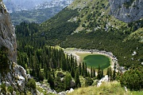
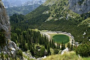

Disclaimer: These pages are not actively maintained, and some of the practical information on the site is out of date. I am working on a new version of the site that will focus more on my photos and memories of travel in Southeast Europe, and less on practical details that too easily become obsolete. In the meantime, please treat the information here with caution.
Montenegro :: Introduction
Montenegro packs a lot of scenery into its tiny territory. Its Adriatic coast doesn't yet get the same level of publicity as Croatia's, but that is bound to change. It may not have islands but it does have sandy beaches and a spectacular fjord. Away from the sea the landscape is equally spectacular.
Where to go: some suggestions

The highlight of the Adriatic coast is the Bay of Kotor (Boka Kotorska). The bare mountains plunging into the dark water have caused it to be compared with a Norwegian fjord - but it's a fjord with Mediterranean flowers growing in the villages along the shoreline. At the head of the bay is the walled town of Kotor. It's not as big or as well-scrubbed as Dubrovnik just up the coast, but it's still a wonderful place to wander around. Don't miss the steep steps leading to the highest point of Saint Ivan's fortress: you won't regret your efforts when you see the town and bay spread out below you.
Elsewhere on the coast Budva and Herceg Novi are popular resorts. Budva in particular apparently gets crowded in summer, but at other times of year its a pleasant place to stay, even if its reconstructed walled town is a little artificial. The port of Bar is not very interesting in itself, but the nearby ruins of the Stari Bar citadel have an impressive location. Behind Stari Bar some intriguing trails lead into the Rumija Mountains. On the far side of the mountains is Lake Skadar, the largest lake in the Balkans. Further south again is Ulcinj, a pleasant resort that also serves as a useful stop on the way to Albania.
The scenic highlight of inland Montenegro is Durmitor National Park. The main mountain resort at Žabljak is a little bit out of the way but well worth the trouble of getting there. Despite an intimidatingly jagged appearance, the Durmitor massif is very accessible to hikers. Many of the summits can be reached in a few hours of straightforward hiking, and the views from the top are unforgettable. You don't need to be a hiker to appreciate the deep peace that surrounds the park's many small lakes. Also nearby is the equally awe-inspiring Tara Canyon, a popular destination for rafting excursions.
Much as I like Montenegro, I have to admit that it doesn't have much in the way of urban highlights. You're quite likely to pass through the capital Podgorica while travelling around the country, but it doesn't have much to tempt visitors to stay. The former capital Cetinje is more interesting, although it's probably too small and sleepy to be count as "urban". It's a rather bizarre collection of former consulates and modest palaces set in a landscape of limestone crags.
Practicalities
Transport
There is only one operational railway in Montenegro, running from Bar through Podgorica and northwards into Serbia. Three or four daily trains run the full length of the line to Belgrade - this journey is recommended for the scenery. There are also some local trains within Montenegro - these are slow and often crowded, but they offer the opportunity to see some of the scenery along the railway line if you are not heading to Serbia.
Buses run frequently along the length of the coast, and inland from Budva via Cetinje to Podgorica and towards Serbia. This makes it easy to visit many of the most popular places on day trips from any base on the coast. Away from these routes buses are much less frequent and rather slow, the level of comfort varies wildly, and information can be difficult to come by. Displayed bus timetables in inland towns are not necessarily accurate, if they exist at all. See the FAQ for details of connections to Croatia and Albania.
Money
Conveniently for those of us living in the Eurozone, Montenegro's currency is the Euro. ATMs were relatively slow to spread in Montenegro, so you may read warnings in guidebooks about the necessity of carrying a lot of cash. When I visited in 2006 I found that the situation had changed completely - ATMs have proliferated and there is even one in remote Žabljak. Montenegro is generally cheaper than Croatia, provided you stay in private rooms rather than hotels; however in touristy coastal areas some things can be surprisingly expensive. Accommodation in Podgorica is aimed at business travellers rather than tourists and priced accordingly.
Language
The main language spoken in Montenegro is usually described as "Serbian", but now that independence has been achieved it seems likely that the term "Montenegrin" will be also be used. Both Latin and Cyrillic alphabets are used - it's difficult to generalise about which to expect in any given situation. In contrast to Serbia, most bus timetables seem to be in Latin script. There is also an Albanian-speaking minority, particularly noticeable around Ulcinj. English is nowhere near as widely spoken as in Croatia. It's reasonably common along the coast, but if you happen to speak German or Italian you will certainly increase your chances of being understood.
 

More photos in my Montenegro Galleries